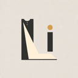

小场面技术支持
小场面是你的 iPhone 追星手账。记录现场、收藏票根、整理艺人档案或记账时遇到问题，欢迎发邮件联系我们。也欢迎告诉我们你希望改进的地方。
常见问题
没有收到行程提醒怎么办？
先打开对应的行程详情，确认已开启提醒并选好提醒时间。再到 iPhone「设置」中检查是否允许小场面发送通知。
票根截图识别有误怎么办？
导入截图后，可以在保存前修改演出名称、日期、场馆和票务平台。若关键文字没识别出来，也可以手动填写。
扫描账单后的金额不对怎么办？
扫描结果会填入账单草稿。请对照原单核对金额、币种和日期，有出入时可直接修改，再确认保存。
换手机前怎么备份记录？
在旧设备打开小场面「设置 → 账号与数据」，选择「导出完整备份（含照片）」，并把备份文件另存到可在新设备访问的位置。再在新设备的同一页面选择「从备份恢复」。小 Li 对话不包含在备份中。
联系支持时需要提供什么？
请附上 iPhone 型号、iOS 版本、小场面 App 版本，以及遇到问题的页面、操作步骤和提示。如果有能说明问题的截图，也可以一并附上。
发送截图前，请遮盖票根二维码、订单号和支付凭证等个人信息。